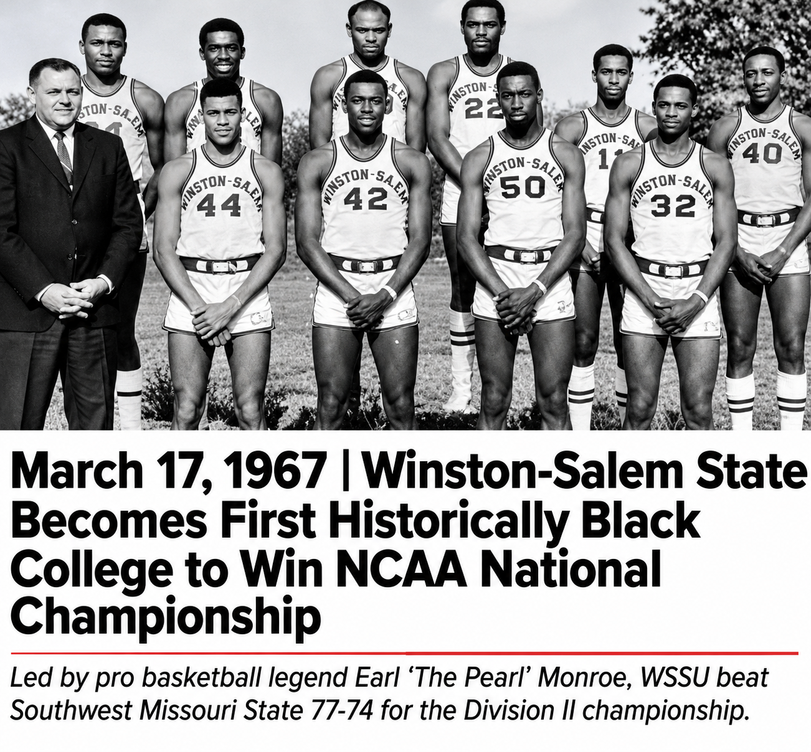

WSSU History · 1967
1967
The Championship That Changed the Game
In 1967, Winston-Salem State's Rams won the NCAA College Division men's basketball national championship. It was the first NCAA men's basketball national title won by a historically Black college or university.

Numbers that tell the story
A Season for the History Books
A championship is bigger than its final score. The Rams brought national recognition to excellence already flourishing at Winston-Salem State.
The people
Clarence E. "Big House" Gaines
Coach Gaines built a WSSU basketball program defined by discipline, mentorship, and extraordinary achievement. He led the Rams to the 1967 championship, shaping a legacy that reached far beyond the court.
Earl "The Pearl" Monroe
Vernon Earl Monroe starred on WSSU's historic championship team. His creativity, scoring, and basketball brilliance helped carry the Rams to the national title and preceded his celebrated professional career.
Why it matters
More Than a Championship
Students deserve to know whose shoulders they stand on. The 1967 Rams offer a story of HBCU achievement, collective excellence, determination, and possibility. Their history can inspire curiosity and deepen pride in the communities that produced them.
Sources
- WSSU 1967 championship team (wssurams.com)
- WSSU 2026 history, NCAA College Division, predecessor of today's Division II (wssurams.com)
- WSSU Earl Monroe biography (wssurams.com)
Rights note: Historical photos, school marks, and personal likenesses may have separate usage rights. Source attributions are included, and nothing here implies an official WSSU endorsement or licensing agreement.